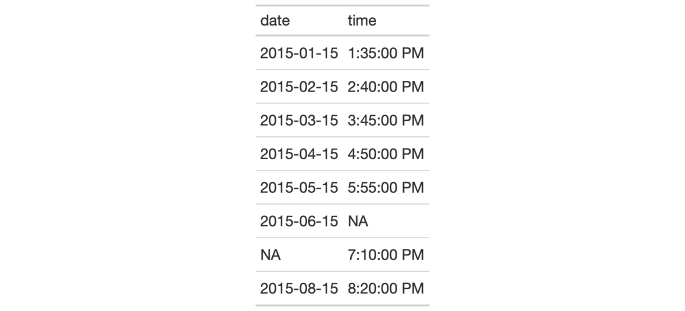
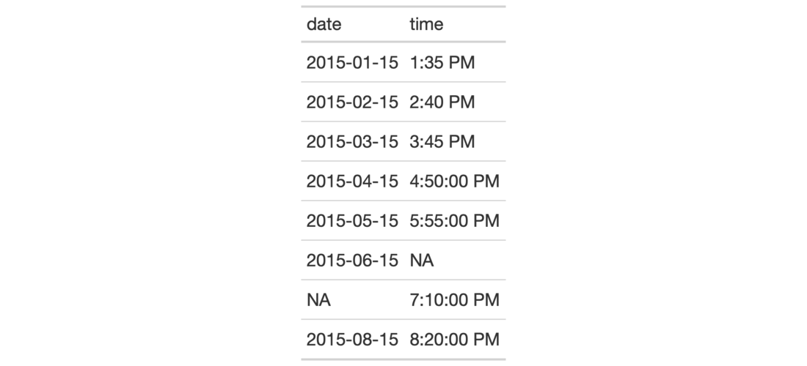

| fmt_time {gt} | R Documentation |
Format input time values that are character-based and expressed according to
the ISO 8601 time format (HH:MM:SS). Once the appropriate data cells are
targeted with columns (and, optionally, rows), we can simply apply a
preset time style to format the times. The following time styles are
available for simpler formatting of ISO times (all using the input time of
14:35:00 in the example output times):
hms: 14:35:00
hm: 14:35
hms_p: 2:35:00 PM
hm_p: 2:35 PM
h_p: 2 PM
We can use the info_time_style() function for a useful reference on all of
the possible inputs to time_style.
fmt_time(data, columns, rows = everything(), time_style = 2)
data |
A table object that is created using the |
columns |
The columns to format. Can either be a series of column names
provided in |
rows |
Optional rows to format. Providing either |
time_style |
The time style to use. Supply a number (from |
Targeting of values is done through columns and additionally by rows (if
nothing is provided for rows then entire columns are selected). A number of
helper functions exist to make targeting more effective. Conditional
formatting is possible by providing a conditional expression to the rows
argument. See the Arguments section for more information on this.
An object of class gt_tbl.


3-6
Other Format Data:
data_color(),
fmt_currency(),
fmt_datetime(),
fmt_date(),
fmt_markdown(),
fmt_missing(),
fmt_number(),
fmt_passthrough(),
fmt_percent(),
fmt_scientific(),
fmt(),
text_transform()
# Use `exibble` to create a gt table;
# keep only the `date` and `time` columns;
# format the `time` column to have
# times formatted as `hms_p`
# (time style `3`)
tab_1 <-
exibble %>%
dplyr::select(date, time) %>%
gt() %>%
fmt_time(
columns = time,
time_style = 3
)
# Use `exibble` to create a gt table;
# keep only the `date` and `time` columns;
# format the `time` column to have mixed
# time formats (times after 16:00 will
# be different than the others)
tab_2 <-
exibble %>%
dplyr::select(date, time) %>%
gt() %>%
fmt_time(
columns = time,
rows =
time > "16:00",
time_style = 3
) %>%
fmt_time(
columns = time,
rows =
time <= "16:00",
time_style = 4
)